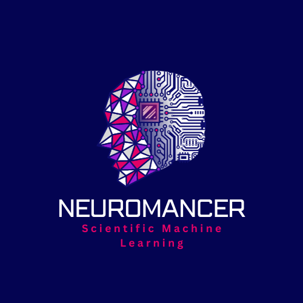

PIML-ACC-24
Physics-informed Machine Learning for Modeling, Control, and Optimization
American Control Conference - July 8-9, 2024
Location: Toronto, ON, Canada at the Westin Harbour Castle
In recent years, there has been an explosion of research on the intersection of machine learning and classical engineering domains. Machine learning is increasingly being used in the development of novel data-driven approaches for modeling and control of dynamical systems, traditionally dominated by physics-based models and scientific computing solvers. On the other hand, engineering and scientific computing principles are changing the machine learning landscape from purely black-box into domain-aware methods by incorporating more structure and prior knowledge into their model architectures and loss functions.
Physics-informed machine learning leverages the inherent knowledge and understanding of the physical world to inform the learning process of machine learning algorithms. By explicitly integrating physical laws, domain expertise, and prior knowledge into the learning framework, physics-informed learning empowers control systems to leverage the flexibility and adaptability of machine learning while remaining grounded in a solid understanding of the underlying dynamics. This fusion enables more efficient and trustworthy learning that results in control applications with superior performance, robustness, and interpretability.
The potential applications of physics-informed machine learning for control and optimization are immense and diverse, spanning a wide range of domains. For example, in robotics, physics-informed learning can enhance the control of complex manipulators and autonomous agents by explicitly considering mechanical constraints, kinematics, and dynamics. Furthermore, in power systems and industrial processes, physics-informed learning can optimize control strategies by taking into account physical phenomena, such as heat transfer, fluid dynamics, and thermodynamics.
This workshop aims to provide insight into recent advances in the field of physics-informed machine learning for modeling, control and optimization, and sketch some of the open challenges and opportunities using physics-informed machine learning. In the morning, experts with experience in physics-informed learning and optimization based control will present new results in this area and spotlight challenges and opportunities for the control community as well as recent advances in physics-informed learning in general. In the afternoon, a tutorial-style coding session will provide attendees hands-on experience with tools in the ecosystem of physics-informed learning. The workshop targets an audience from graduate level to experienced theoretical and practically oriented control engineers who aim to improve their knowledge in physics-informed machine learning for control and optimization.
The full-day workshop will be organized into a morning and an afternoon session, split by a lunch break. The morning session starts with a general introduction, followed by presentations on special topics and applications of physics-informed learning. In the afternoon, we will offer a tutorial-style hands-on coding session.
Registration in each workshop is required by all active participants, and is also open to all interested individuals. For more information please refer to ACC-24 Workshop page.
Abstract: Reliable dynamical system models are key for operations like failure detection, design optimization, and safe control. However, first-principle models of complex systems such as water distribution networks, power grids, and other coupled dynamics suffer from time-consuming development and the need for expert knowledge. Dynamical models powered by machine learning face challenges like unknown trustworthiness, limited generalizability, and physical inconsistency, making them unsuitable for safe controller design. For that reason, we might want to decompose complex systems into subsystems to facilitate the modeling and verification process. However, that approach raises challenges like interconnecting ODE and PDE models while preserving physical correctness, quantifying and propagating uncertainty, and designing safe control algorithms. In this talk, I will present our results on data-driven port-Hamiltonian systems (PHS) to enable trustworthy and accurate compositional modeling of complex dynamics including ODEs and PDEs while preserving physical consistency. We use ML techniques with uncertainty quantification to learn the Hamiltonian function of each subsystem. In contrast to many physics-informed techniques that impose physics by penalty, the proposed data-driven model is physically correct by design. The framework is in particular suitable for composable learning as its physical consistency can be preserved under interconnection. Finally, data-driven port-Hamiltonian systems can be used in a robust control setting to establish safe learning-based control.
Bio: Thomas Beckers is an Assistant Professor of Computer Science and Mechanical Engineering at Vanderbilt University. Before joining Vanderbilt, he was a postdoctoral researcher at the Department of Electrical and Systems Engineering, University of Pennsylvania, where he was member of the GRASP Lab, PRECISE Center and ASSET Center. In 2020, he earned his doctorate in Electrical Engineering at the Technical University of Munich (TUM), Germany. He received the B.Sc. and M.Sc. degree in Electrical Engineering in 2010 and 2013, respectively, from the Technical University of Braunschweig, Germany. In 2018, he was a visiting researcher at the University of California, Berkeley. He is a DAAD AInet fellow and was awarded with the Rhode & Schwarz Outstanding Dissertation prize. His research interests include physics-enhanced learning, nonparametric models, and safe learning-based control.
This two-hour long session will provide hands-on code tutorials in the form of well documented jupyter notebooks introducing open-source libraries using physics-informed machine learning for control.
Summary: PyEPO (PyTorch-based End-to-End Predict-then-Optimize Tool) is a Python-based, open-source software that supports modeling and solving predict-then-optimize problems with the linear objective function. The core capability of PyEPO is to build optimization models with GurobiPy, Pyomo, or any other solvers and algorithms, then embed the optimization model into an artificial neural network for the end-to-end training. For this purpose, PyEPO implements various methods as PyTorch autograd modules.
Summary: Neural Modules with Adaptive Nonlinear Constraints and Efficient Regularizations (NeuroMANCER) is an open-source differentiable programming (DP) library for solving parametric constrained optimization problems, physics-informed system identification, and parametric model-based optimal control. NeuroMANCER is written in PyTorch and allows for systematic integration of machine learning with scientific computing for creating end-to-end differentiable models and algorithms embedded with prior knowledge and physics.
